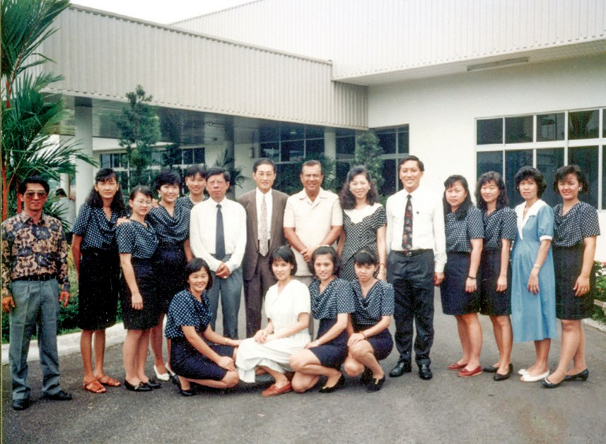
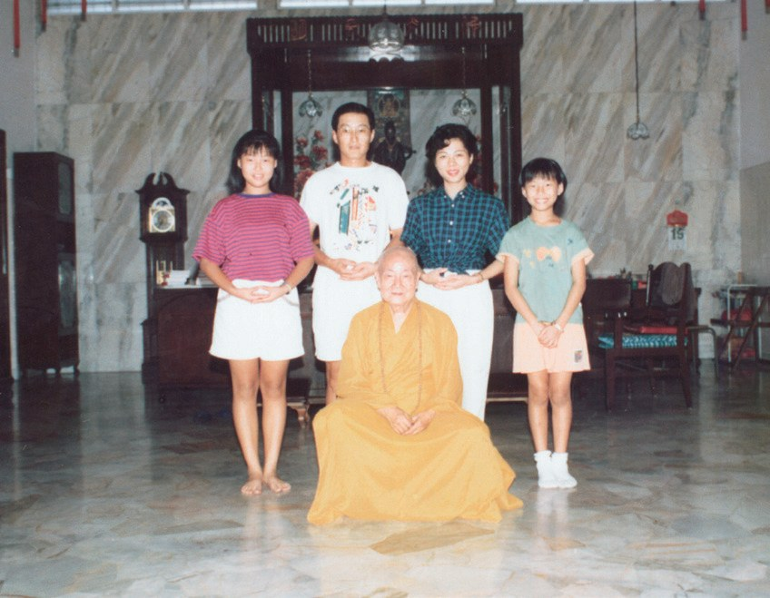
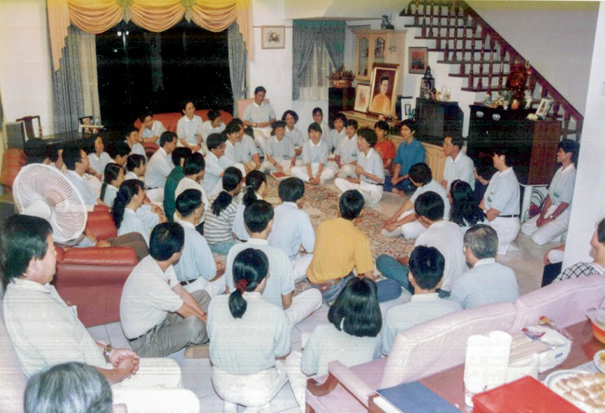
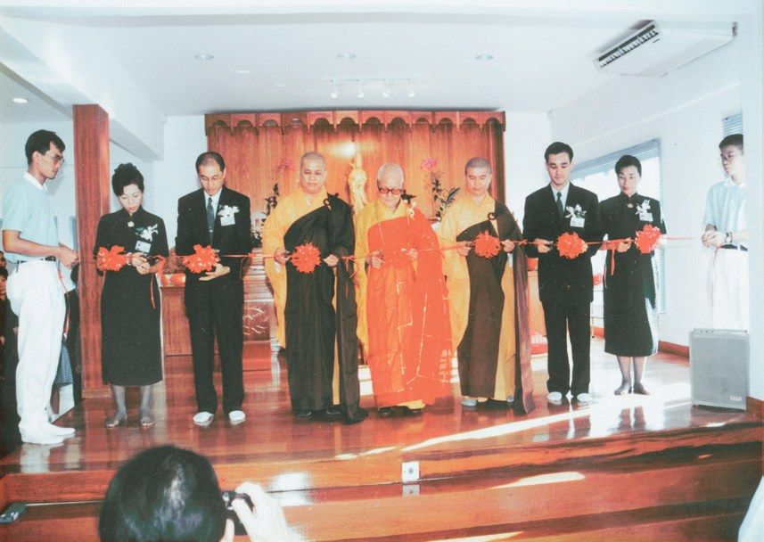
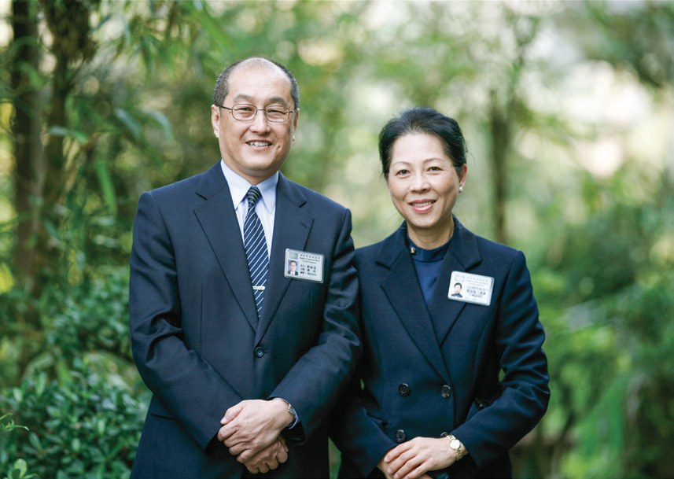

雪隆分會緣起
雪隆慈濟從一間工廠裡的小小「善之家」，怎麼走到一座靜思堂？

先別急著下結論，讀完再說說你的想法～
這一篇講雪隆分會的起點：一對從臺灣來設廠的夫妻，怎樣把慈濟帶到馬來西亞。
後半段是簡慈露自己的故事：脾氣、算命、兩場大病，和上人的一句話。
下面是原書的節錄，紅色底線是我們替你標出的轉折點。
讀之前：一個人想幫助別人，你覺得第一步是什麼？
工廠裡的捐款箱
從設廠，到讀到一本刊物，再到受證成為委員。閱讀引導
1988年，臺商劉銘達（濟雨）和太太簡淑霞（慈露）遂將成衣事業轉移到馬來西亞，在馬六甲開設上橋製衣廠。夫妻倆後來全力投入慈濟志業，開啟了慈濟在南馬深耕的因緣。

學佛的簡淑霞，個性嚴謹但內心柔軟，一念單純想要濟助貧苦人，於1990年10月在自家的製衣廠設立「善之家」推動慈善工作，鼓勵員工隨喜捐款，再將善款寄到報館轉贈有需要的人，或協助生活有困難的廠內員工。

就先在工廠裡做善事了！
1991年年底，簡淑霞返臺，因緣際會之下閱讀了《慈濟道侶》半月刊，看到市井小民為協助證嚴上人興建慈濟醫院，紛紛慷慨解囊的報導而感動不已。
猜一猜閱讀引導
讀完報導很感動的簡淑霞，到臺北分會做了什麼？

同年8月，簡淑霞、劉銘達夫婦赴吉隆坡湖濱精舍拜訪伯圓長老，伯圓長老讚歎證嚴上人以「一日不作，一日不食」的精神創造了慈濟世界，並鼓勵夫婦倆人在馬來西亞協助推動慈濟志業。
1994年2月9日，夫妻倆受證成為慈濟委員，法號「濟雨」和「慈露」。

難怪前面兩個名字換來換去。
一個家，變成一個會所
從借住家聚會，到聯絡處、支會、分會，再到一座靜思堂。閱讀引導
早年吉隆坡志工沒有固定的活動場所，1994年簡慈露劉濟雨夫婦先提供位於安邦的住家作為聚會場地。1996年2月，吉隆坡聯絡處正式成立。同年6月，他們夫婦買下吉隆坡莎亞南一百多坪的公寓，作為新會所，於同年10月20日舉辦啟用典禮。

「我一向無所求，唯願慈濟世界以『人和』為貴，慈濟人相敬禮讓，勇於承擔、樂於配合……」
證嚴上人勉勵・p.22
家裡天天都好熱鬧吧！
1997年5月21日，吉隆坡聯絡處在上人的肯定與鼓勵下，正式升格為吉隆坡支會。……2006年2月1日，支會正式升格為慈濟吉隆坡分會。2010年11月29日，因志工分布及會務推動已涵蓋整個吉隆坡市及雪蘭莪州，因此吉隆坡分會正名為「慈濟雪隆分會」。

從1998年起，為解決吉隆坡慈濟人會所空間不足的問題，以及凝聚志業體，志工們集思廣益覓地籌建靜思堂，但因為一直未尋獲適合土地，直到2006年志工林孝式（惟京）捐贈位於吉隆坡甲洞的土地，興建靜思堂的土地才總算有了著落。

到 2006 年才有著落……
經過三年、近一千一百天的努力，終於取得土地開發准證，並於2010年9月16日舉辦動土典禮。吉隆坡靜思堂於2014年5月11日正式啟用。
- 3,101受證慈誠、委員p.23
- 10,087志工p.23
- 676,486會員p.23
六十多萬位會員！
智者運命
一個脾氣急、愛算命的人，怎樣找到人生的目標。閱讀引導
在生活中，她急於求好心切的性格，稍有不順意，就理直氣壯、得理不饒人；更迷信於算命，常常影響自己的心情，也讓家人備感困擾。
開「善之家」的人，好不一樣！
直到她加入慈濟，因緣開始轉變，她深入馬六甲與吉隆坡訪視濟貧，看到示現人間種種的苦難，體悟了生命無常，人生是苦的生命真諦，理解「智者運命，愚者命運」的道理。
劉濟雨發現簡慈露做慈濟後不再隨意動怒，也變得容易善解人意；於是在她的接引下，劉濟雨也同心共行加入慈濟，夫婦倆人的感情也變得更和諧。

在進入慈濟六年後，有位志工發現簡慈露的脖子有些腫脹，提醒她要去做檢查；回臺檢查後，發現罹患甲狀腺惡性腫瘤，以及腦部的腦下垂體腫瘤，醫師建議她立即安排手術。
「妳就是太聰明，妳要瞭解佛法、瞭解生死，更要相信自己在馬來西亞能幫助那麼多人、救那麼多人，這個時候應該相信自己也可以救自己。」
證嚴上人對簡慈露說・p.25也要相信可以救自己……
五年後，簡慈露腫瘤復發，所幸經治療後逐漸緩解。簡慈露表示，兩次的病苦給她很大的警惕，要善用生命的使用權，雖然一樣精進做慈濟，但不一樣的是心態，她體悟到要用感恩心做慈濟。
若能用歡喜心做慈濟，就會有很大的免疫力，要歡喜甘願付出！
原文・p.26上人回憶：「馬來西亞慈濟志業蓬勃開展是始於一九九七年，儘管當地以伊斯蘭教為國教，但慈濟志工十多年來的付出廣獲肯定，目前的慈濟據點中，多數是由發心的會眾大德提供場地。
菩薩道是康莊大道，既選擇了這條路，往前走就對了。
原文・p.26停一停：誰讓你記住了？閱讀引導
選一位你印象最深的人。沒有標準答案。
一個會所、一座靜思堂，背後是哪些人的付出？

一起回頭看看吧～
回望
依本章原文整理，每一條都標了原書頁碼。閱讀引導
背後原因
慈濟怎麼來到雪隆

小川第一顆種子是怎麼落下的？
- 來馬設廠
劉銘達、簡淑霞把成衣事業轉移到馬六甲。p.19
- 善之家
在工廠裡推動慈善，鼓勵員工隨喜捐款。p.19
- 讀到慈濟
返臺讀《慈濟道侶》，捐兩張病床、加入會員。p.20
- 受證委員
伯圓長老鼓勵，1994年受證，法號濟雨、慈露。p.20–21
據點沿革
會所一路搬、一路升格

小禾從住家到靜思堂，走了多久？
- 1994
安邦的住家成為聚會場地。p.21–22
- 1996
吉隆坡聯絡處成立；10月莎亞南會所啟用。p.22
- 1997
升格為吉隆坡支會。p.22
- 2004
會所遷到八打靈再也。p.22
- 2006
升格為吉隆坡分會；同年林孝式捐地。p.22–23
- 2010
正名為「慈濟雪隆分會」；靜思堂動土。p.22–23
- 2014
吉隆坡靜思堂正式啟用。p.23
一個人的改變
簡慈露以前和後來
小川她自己變了什麼？
- 稍有不順意，就得理不饒人不再隨意動怒，容易善解人意p.24
- 迷信算命，影響心情理解「智者運命，愚者命運」p.24
- 夫妻各自忙事業接引丈夫同行，感情更和諧p.24
- 生病後一樣做慈濟心態不同，用感恩心做p.25
以上只整理本章寫到的事；書裡沒寫到的，我們不替它下結論。
回頭看讀前的選擇閱讀引導
簡淑霞先在工廠設「善之家」，鼓勵員工捐款（p.19）；後來接引丈夫一起做慈濟（p.24）；她自己也不再隨意動怒（p.24）。三樣都發生了，你覺得哪一步最難？
到底差在哪裡？
只有你自己看得到喔！
準備好了就一起出發～